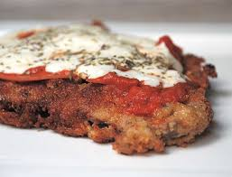

La milanesa a la napolitana tiene todo el valor de una contundente milanesa de ternera sumado un increible aroma de pizza

Ingredientes necesarios para hacer una docena de milanesa napolinata
12 milanesas de peceto
sal, a gusto
1 taza de harina o rebosador a eleccion
4 huevos
500 grs de pan rallado
aceite, c/n
ingrediente para la salsa
1 cebolla, opcional
1 lata de tomates
orégano, a gusto
sal y pimienta, c/n
1 hoja de laurel
12 rodajas de queso cremoso
12 fetas de jamón cocido
Preparacion
Salar las milanesas, pasarlas por harina, huevo batido y pan rallado, presionando bien para que quede un buen empanado.
Freírlas dorando por ambos lados y reservar sobre papel absorbente.
Para la salsa, procesar una cebolla chica con el tomate y el orégano, condimentar, agregar el laurel y cocinar esta mezcla a fuego suave por 20 minutos.
Finalmente en una asadera poner las milanesas y sobre cada una de ellas una cucharada de salsa, una feta de jamón, otra de queso y gratinar en horno fuerte hasta que éste se derrita.
Aqui abajo le dejamos la direccion de nuestro local